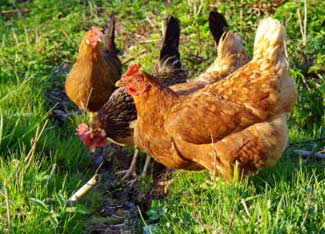

Whether you have rural acreage, a suburban backyard or an urban lot, you may be able to raise chickens. No kidding. Keeping a few hens in your backyard will give you fresh eggs that are significantly more nutritious than what you normally buy at the supermarket. On our Chicken and Egg page, you can read about how free-range eggs have less cholesterol and saturated fat, and more vitamin E, beta carotene vitamin A and omega-3s than the eggs you’re used to. Plus, your birds can be raised humanely (much more so than they would be in a factory-farm setting), and give you hours of entertainment.
Visit our new online forum to discuss questions, concerns and advice about laws and regulations for keeping chickens in your backyard.
Local laws regarding poultry vary from city to city. Our 2003 survey of 20 cities found that only four did not allow chickens and eight allowed an unlimited amount. To find exact local codes for your area, visit the American Legal Publishing’s Code Library or the Municipal Code Corporation’s Web Site, Municode.
If you don’t like your city’s chicken regulations, then try and change them! In 2004, Alicia Rheal and Brian Whiting from Madison, Wis., organized a group to help change the laws in their area after they realized that they had been raising chickens illegally for a year. From that they started the site Mad City Chickens, where they now teach people about raising chickens and how to create groups that support it. To see if there is a group that exists in your area, check out Urban Chickens.
Most cities that allow raising chickens still won’t allow roosters because they often crow loudly at dawn. Some people might think that a rooster is necessary in order to have eggs, but hens will actually lay eggs without one - the infertile eggs simply won’t produce chicks. While roosters can be very loud in the morning, hens are not. They squawk a little bit whenever they lay their eggs, but besides that, they make a soft clucking noise that is way quieter than the average dog’s bark. And by sunset, they are fast asleep.
While the idea of raising chickens may not be appealing to some, the fact is that they are no more likely to cause noise or odor problems than any other pet. The only problem standing in the way of most would-be chicken farmers is the law. So, if keeping poultry is not legal in your area, now is the time to speak up and spark change. With the continual rise in food prices, you’ll be thankful you did.
Once you decide to keep chickens, let your neighbors know. Explain to them the benefits of fresh eggs. Tell them that, on average, three hens lay about two eggs a day during spring and summer, so you may be getting enough to share with them every so often.
When it comes to raising chickens, bird flu has become a growing concern. According to Bird Flu: A Virus of Our Own Hatching, though, backyard chickens are not the problem. Diseases like this are more likely to come from areas where chickens are crowded and confined in industrial poultry operations - not from backyard birds.
If your city regulations and your neighbors are cool with it, then it’s time to get started! Harvey Ussery’s article Incredible Homestead Chickens outlines all the basics. And here’s a simple mini-coop plan.
Don't forget to visit our online forum to discuss keeping chickens in your area!
|
 ISTOCKPHOTO Free-range chickens drink water outside. By raising hens in your back yard, you can get fresh, nutritious eggs. |
|
|